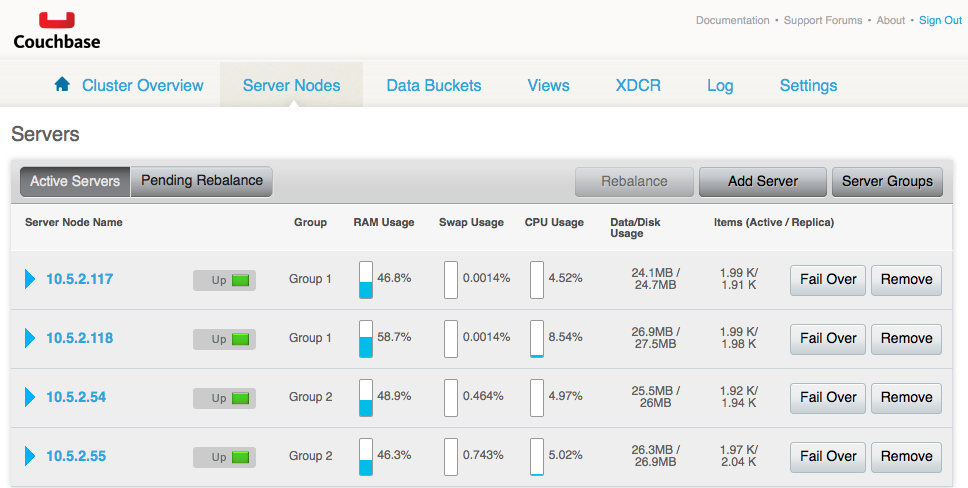

Managing Rack Awareness
The Rack Awareness feature (Enterprise Edition) allows logical groupings of servers on a cluster where each server group physically belongs to a rack or availability zone. This feature provides the ability to specify that active and corresponding replica partitions be created on servers that are part of a separate rack or zone.
This section describes how to manage server groups through the Web Console. Server and server groups can also be managed throught the Couchbase command-line interface (CLI) and REST API.
Note: By default, when a Couchbase cluster is initialized, Group 1 is created.
- Upgrade all servers in the cluster to version 2.5 or higher and to Couchbase Enterprise Edition
- Configure at least two server groups.
- Configure all of the servers to use server groups.
- Configure each server group to have the same number of serves (recommended).
The servers and server groups are displayed from the Server Nodes tab. Server groups are edited and created by clicking on Server Groups
Figure 1. Server Nodes tab

Figure 2. Server Groups